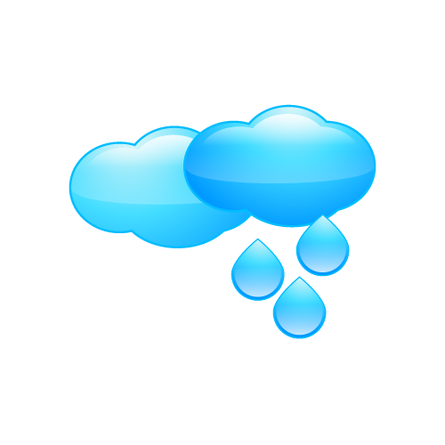
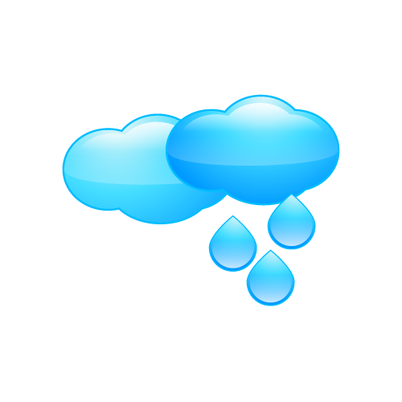
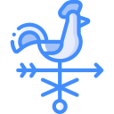

{{ this.diaSemana }}, {{ this.dia }} de {{ this.nombreMes }} de {{ this.anio}}
{{ this.hora }} hs
{{ this.dato.nombre }}
 


Desfavorable para aplicar agroquímicos
Favorable para aplicar agroquímicos